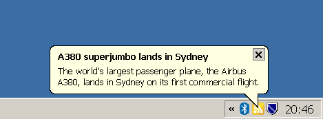

BalloonRSS is a simple RSS reader that displays incoming messages as balloon tooltips in the windows task bar. The news entries themselves are linked to be read with the browser.
The messages are retrieved from a set of configurable RSS feed sites. The news entry to view next is selected by a pre-defined priority which is dynamically adapted according the user's interest, which is determined by the user's message click rate.
This program is free software; you can redistribute it and/or modify it under the terms of the GNU General Public License (GPL) as published by the Free Software Foundation; either version 3 of the license, or (at your option) any later version.